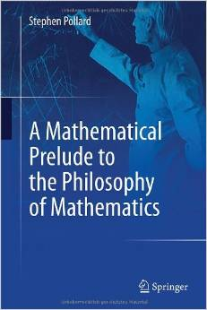

Conceptions of Set Archives - Logic Matters

Luca Incurvati’s Conceptions of Set, 1
I’m really pleased to see that Luca Incurvati’s long-awaited Conceptions of Set and the Foundations of Mathematics has now been published by CUP. It’s currently jolly expensive. So let’s hope for an early inexpensive paperback. Happily, though, you will be able now to read an e-version of the book for free if your library has appropriate access to the Cambridge Core platform. So I’m going to assume I’m not the only one with access to the book! — and will dive in and comment slowly, chapter by chapter, over the next few weeks. I’ll be very interested (of course) to hear other readers’ reactions.
The first chapter is titled ‘Concepts and conceptions’. Not that Luca wants to suggest a sharp distinction here between concept and conception. But roughly, to characterize the concept of set is to characterize what someone has to grasp if they are to count as understanding ‘set’ (in the right way). But that characterization will leave open a lot of fundmental questions about the nature of sets and about what sorts of sets there are, about how sets relate to their members, and so on. And our answers to such questions will typically be guided by a conception of sets, which tells us something about what it is to be a set (a story which “someone could agree or disagree with though without being reasonably deemed not to possess the concept” of set). Take for example the iterative conception of sets: you don’t have to have grasped that surprisingly late arrival on the scene to count as understanding ‘set’. (I suppose that we might wonder about the understanding of someone who couldn’t see that the iterative conception, once presented, was at least a candidate for an appropriate conception of the world of sets: but reasoned rejection of the now standard conception would surely not debar you from counting as talking about sets.)
OK, so what does belong to the core concept of set as opposed to a more elaborated conception? Luca suggests three key elements: - Unity: “A set is … a single object, over and above its members.” - Unique decomposition: “A set has a unique decomposition” into its members. - Extensionality: The familiar criterion of identity for sets — sets are identical if and only if they have the same members.
These three aspects of the concept of set distinguish it from neighbouring ideas. (1) is needed to distinguish sets from mere pluralities — it distinguishes the set of Tom, Dick and Harry from those men. (2) is needed to distinguish sets from mereological fusions which can be carved into parts in arbitrarily many ways. (3) is needed to distinguish the relation between a set and its members, and the relation between an intensionally individuated property and the objects which have the property (different properties can have the same extension).
Let’s pause though over (1). We have two sets of Trollope’s Barchester Chronicles in the house. We can distinguish the two sets of six books, and count the sets — two sets, twelve individual books. One set is particularly beautifully produced, the other was a lucky find in an Oxfam bookshop. In a thin logical sense (if we can refer to Xs, count Xs, predicate properties of Xs, then Xs are objects in this thin sense) the sets can therefore be thought of as objects. But are the sets of books objects “over and above” the books themselves? Trying that thought out on Mrs Logic Matters, she firmly thought that talking of the set (singular) is just talking of the books (plural), and balked at the thought that the set was something over and above the matching books. Does that mean she doesn’t understand talk of a ‘set of books’?
The distinction we need here is the one made by Paul Finsler as early as 1926 in a lovely quote Luca gives:** It would surely be inconvenient if one always had to speak of many things in the plural; it is much more convenient to use the singular and speak of them as a class. […] A class of things is understood as being the things themselves, while the set which contains them as its elements is a single thing, in general distinct from the things comprising it. […] Thus a set is a genuine, individual entity. By contrast, a class is singular only by virtue of linguistic usage; in actuality, it almost always signifies a plurality.
In this sense, I’d say that (as with Mrs Logic Matters and the Trollopian sets) much ordinary set talk is surely class talk, is singular talk of pluralities. Luca cheerfully claims “if I say that the set of books on my table has two elements, you [as an English speaker] understand what I am saying”, I rather suspect that the non-mathematician, non-philosopher (i) is going to find the talk of ‘elements’ really rather peculiar, and (ii) is in any case not going to be thinking of the set as something over and above the two books, there on the table.
There’s little to be gained, however, in spending more time wondering how much set talk “as it occurs in everyday parlance” (as Luca puts it) really is set talk in Finsler’s sense, as characterized by Luca’s (1). I think it is probably less than Luca thinks. But be that as it may. Let’s move on to ask: what is the cash value of the claim that a set (the real thing, not a mere class) is a “genuine [bangs the table!] individual entity” [Finsler], is “a single object, over and above its members” [Luca]?
One key thought is surely that sets of objects are themselves objects in the sense that they too, the sets, can be collected together to form more sets. Suppose someone just hasn’t grasped that sets are the sorts of thing that themselves can straightforwardly be members of sets, would we say that they have fully cottoned on to the idea of sets (in the sense we want that contrasts with Finsler’s classes)?
Let’s take that thought more slowly. Suppose we for the moment take the idea of an object in the most colourless, all-embracing, way — just to mean a single item of some type or another. Then e.g. Fregean concepts are indeed items distinct from the objects that fall under them; fixing the world, there’s a unique answer to what falls under them; and they are individuated extensionally — same extension, same Fregean Begriff. This isn’t the place to assess Frege’s theory of concepts! The point, though, is that (1) talk of a single item distinct from the plurality it subsumes, plus (2) and (3), doesn’t distinguish sets from Fregean concepts. And similarly, I think, if we are to distinguish sets from (extensionally individuated) types in the sense of type theory.
But why should we distinguish Fregean concepts or types from sets? What, apart from some rhetoric and motivational chat is the real difference? Surely, one key difference is that Fregean concepts or types are, well, typed — only certain kinds of items are even candidates for falling under a given Fregean concept, or for inhabiting a given type. Sets are, by contrast, promiscuously formed. Take any assortment of objects, as different in type as you like — the number three, the set of complex fifth roots of one, the Eiffel Tower, Beethoven’s op.131 Quartet [whatever exactly that is!] — and then there is a set of just those things. At least, so the usual story goes.
Maybe that example is a step too whacky, and you could deny that there is such a set without being deemed not to know what sets are. But still, you’ll standardly want to countenance at least e.g. a set whose members are a basic set [either empty or with some urelement], a set with that set as it member, a set with those two sets as its members, etc. The set-forming operation does not discriminate the types of such things, but cheerfully bundles them together.
Isn’t the usual idea, in short, that a set of objects (objects apt for being collected into a set) is itself an object in the sense that it is, inter alia, apt to be collected into a set — indeed, collected alongside those very objects we started from? Whereas e.g. a Fregean concept has objects falling under it, but can’t be regarded as itself another item that could fall under a concept with those same objects — that offends against Frege’s type discipline.
I suppose — well, we’ll see when we come to his discussion of the iterative conception — that Luca could treat the idea of sets being (in a sense) type promiscuous as part of a certain conception of sets, something that elaborates rather than is part of our core concept. Given neither of us think there is a sharp concept/conception distinction to be drawn anyway, it certainly wouldn’t be worth getting into a fight about this. But my feeling remains that if we don’t say something more about how (1)’s understanding of sets as objects allows them to be themselves members of sets alongside other objects, then we won’t have done enough to distinguish the concept of set from the concept of more intrinsically typed items.
To be continued (with some comments on Chapter 1’s conception of ‘conceptions‘)